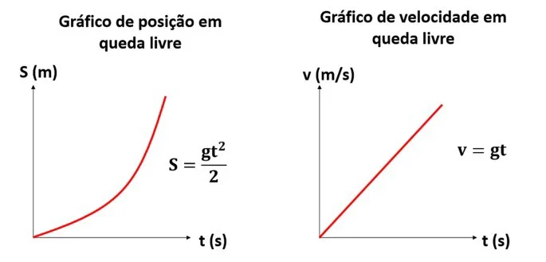

Queda Livre
A queda livre é um tipo de movimento que ocorre quando um corpo está sob a influência da força da gravidade. Quando abandonado a partir do repouso, o corpo se desloca verticalmente em uma trajetória reta, orientada para baixo.
Esse movimento é classificado como uniformemente variado, o que significa que a velocidade é variável devido à presença da aceleração. A velocidade com que o corpo cai aumenta a uma taxa de aproximadamente 9,8 m/s a cada segundo.
Vale lembrar que o valor de g (aceleração da gravidade) varia em função da altitude e latitude. Por exemplo, o valor de 9,80665 m/s² corresponde à aceleração normal da gravidade na latitude de 45° e ao nível do mar. No entanto, é comum aproximar esse valor para 10 m/s² em exercícios, a fim de facilitar os cálculos.
Fórmulas Principais:
Velocidade em função do tempo:
V = g ⋅ t
Fórmula do tempo de queda livre:
Equação de Torricelli
V2 = 2 ⋅ g ⋅ ΔS
Onde:
V: Velocidade final (m/s)
G: Aceleração da gravidade (na Terra, aproximadamente 9,8 m/s² ou 10 m/s² para aproximações didáticas)
T: Tempo de queda (s)
H: Altura ou distância percorrida (m)
Gráficos de Queda Livre
Graficamente, a velocidade do movimento em relação ao tempo é expressa em uma reta ascendente e a variação da posição ao longo do tempo em uma parábola.
